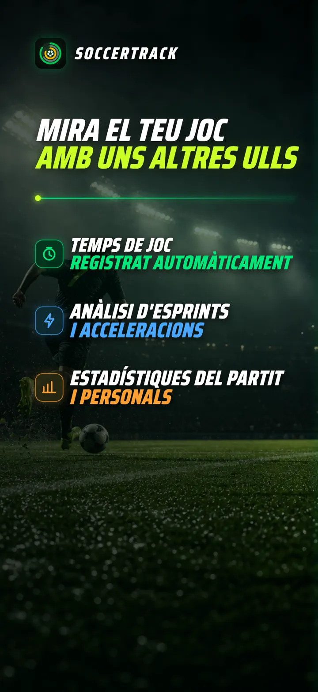
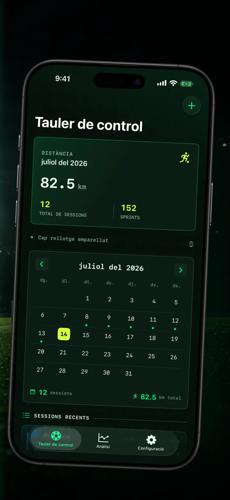
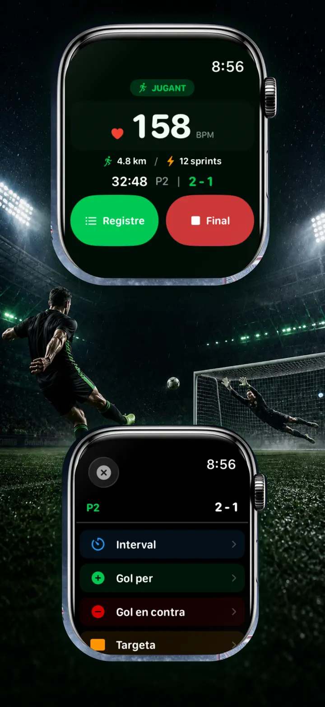
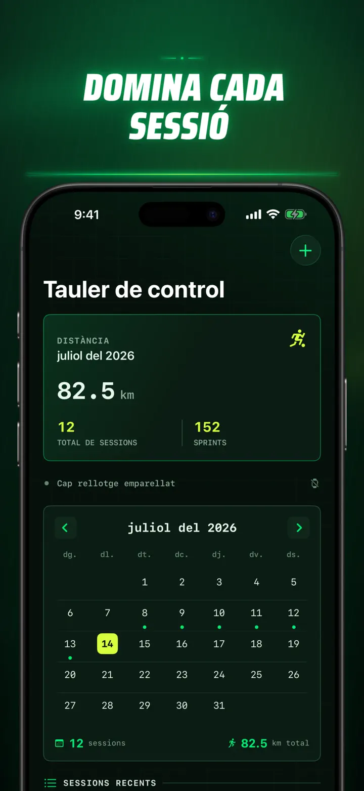
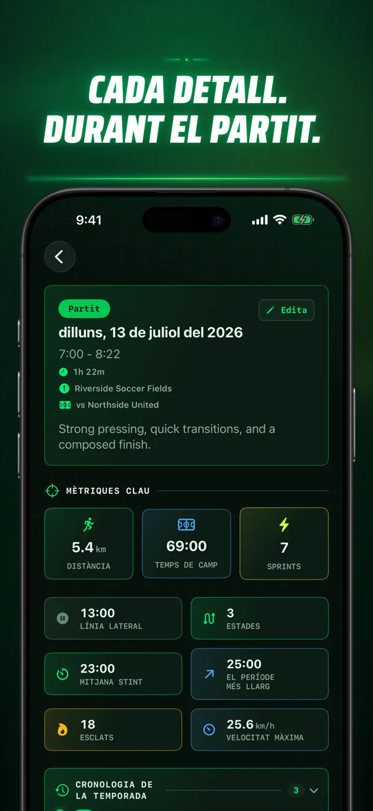
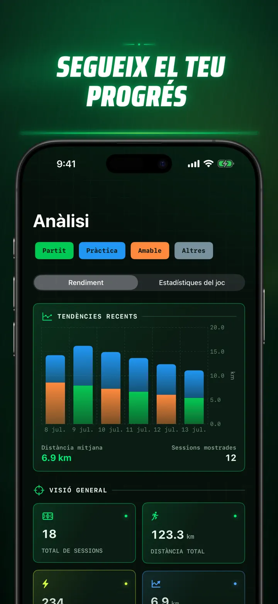
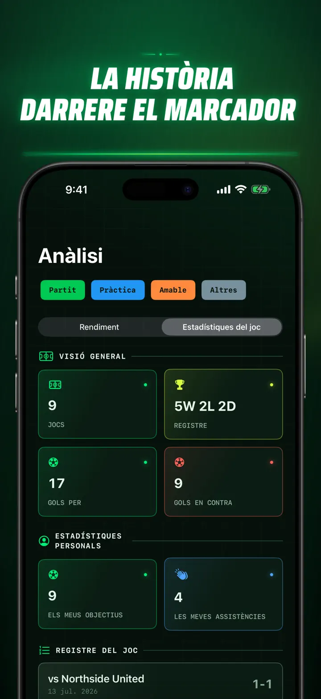
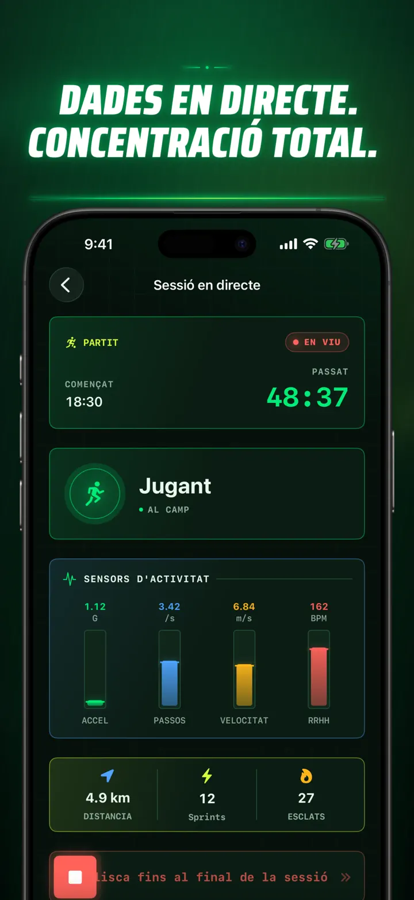
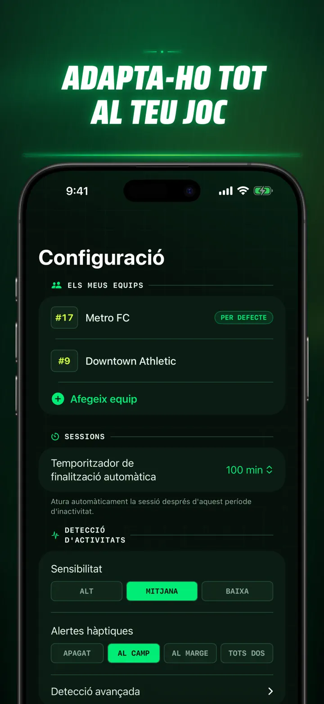
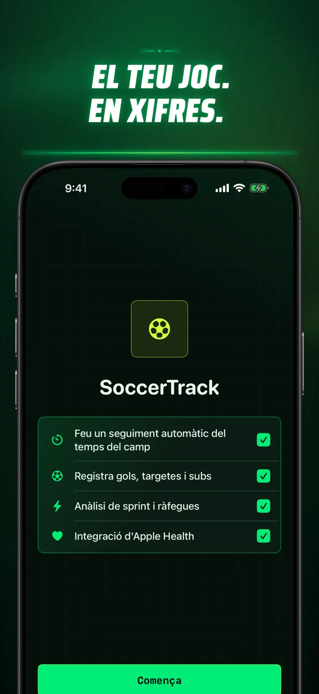

Soccer Time Track
Temps de joc i anàlisi futbol
Inicia una sessió i juga. L’Apple Watch separa automàticament el temps al camp i a la banqueta i registra mètriques en directe, esprints, jugades i tendències.
Descarrega a l’App Store
Sobre l’app
Mira el teu partit d’una altra manera.
Soccer Time Track converteix l’Apple Watch en un assistent de partit per a futbolistes que volen entendre molt més que el resultat final. Comença des del canell, centra’t en el joc i revisa després a l’iPhone una imatge detallada del teu rendiment.
TEMPS AL CAMP AUTOMÀTIC
Descobreix quan eres realment dins del joc. Els senyals de moviment, entrenament i ubicació ajuden a distingir els períodes actius, de baixa activitat i a la banqueta. Obtindràs:
- Temps al camp i a la banqueta
- Períodes de joc i una cronologia clara
- Un desglossament detallat de tota la sessió
EL PARTIT, DES DEL CANELL
Tria Partit, Entrenament, Amistós o Altres. Mentre jugues, registra:
- Gols a favor i en contra
- Els teus gols i assistències
- Targetes grogues i vermelles
- Substitucions i canvis de període
EL TEU RENDIMENT, MESURAT
Ves més enllà dels minuts amb dades com:
- Distància
- Velocitat mitjana i màxima
- Esprints i esforços d’alta intensitat
- Freqüència cardíaca i calories actives
- Cadència i acceleració
DADES EN DIRECTE, MÀXIMA CONCENTRACIÓ
Un iPhone enllaçat pot mostrar mètriques en directe mentre l’Apple Watch manté l’entrenament actiu. Tu et centres en el partit i les dades es registren en segon pla.
SEGUEIX EL TEU PROGRÉS
Reuneix partits, entrenaments, amistosos i altres sessions en un sol historial. Explora tendències i rècords personals, compara rendiments i afegeix equip, dorsal, rival, ubicació i notes per conservar la història de cada resultat.
Necessites les dades en un altre lloc? Exporta sessions, períodes de joc i esdeveniments en format CSV o JSON.
CREAT PER A APPLE WATCH I APPLE HEALTH
Amb el teu permís, Soccer Time Track utilitza dades d’entrenament, freqüència cardíaca, moviment i ubicació per crear anàlisis i desar els entrenaments de futbol completats a Apple Health. El seguiment automàtic requereix un Apple Watch. També pots afegir una sessió manualment a l’iPhone.
LES TEVES DADES, EL TEU PARTIT
Les sessions es queden als teus dispositius i, amb la sincronització d’iCloud activada, a la teva base de dades privada d’iCloud. Soccer Time Track no requereix cap compte, no mostra publicitat i no utilitza analítica de tercers.
Deixa de calcular quant has jugat. Comença a veure què has fet amb cada minut.
Política de privacitat: https://masawata.net/SoccerTimeTrack/privacy-policy.html Condicions del servei: https://www.apple.com/legal/internet-services/itunes/dev/stdeula/
Captures de pantalla









Soccer Time Track
Inicia una sessió i juga. L’Apple Watch separa automàticament el temps al camp i a la banqueta i registra mètriques en directe, esprints, jugades i tendències.
Descarrega a l’App Store